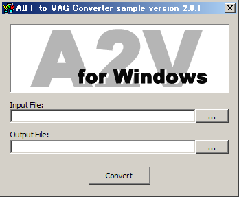

SIE CONFIDENTIAL
Copyright (C) 2020 Sony Interactive Entertainment Inc. All Rights Reserved.
aiffフォーマットのファイルをvagフォーマットに変換するサンプルです。

描画結果
Input File テキストボックスにはエンコード対象のAIFFファイル名を指定します。
Output File テキストボックスにはエンコード結果を書き込むVAGファイル名を指定します。
あるいは、テキストボックスの右側にある[...]ボタンを押してファイルを選択します。
[convert]ボタンを押してエンコードします。
このサンプルを実行するにはAIFFフォーマットのファイルが必要です。